La défense française commence par 1. e4 e6, souvent suivi de 2. d4 d5. Les Noirs préparent …d5 avec leur pion e6 et attaquent e4. Si les Blancs avancent e5, le centre se ferme : les Noirs peuvent alors contester sa base d4 avec …c5.
- Avec les Noirs
- 1. e4 e6 2. d4 d5
- Repère ECO : C00
Un centre fermé ne signifie pas qu’il ne se passe rien. La Française permet de comprendre comment des pions se soutiennent et comment attaquer le début d’une chaîne. Elle demande aussi d’observer une pièce moins libre : le fou c8.
Elle peut intéresser un joueur qui aime comprendre les pions avant de lancer une attaque. Il faut accepter de chercher un rôle au fou c8 et de préparer les ouvertures de lignes.
À retenir avant de jouer
- Votre objectif
- Contester le centre blanc avec …d5, puis coordonner les pièces autour de la structure obtenue.
- La décision au centre
- Face à la chaîne d4–e5, préparer la pression sur d4 avec …c5 et les pièces.
- Le point de vigilance
- Distinguer un cavalier réellement cloué au roi d’une pièce qui peut encore bouger.
Sommaire : choisir une partie du guide
Sur l’échiquier
Les premiers coups, un à un
Dans la notation française, C = cavalier, F = fou, D = dame et O-O = petit roque. T = tour et R = roi. Le signe x indique une capture, + un échec et # un mat. Les points de suspension indiquent un coup des Noirs.
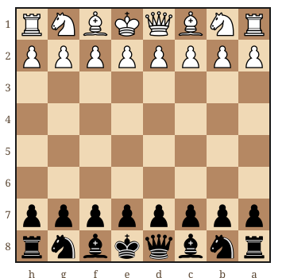
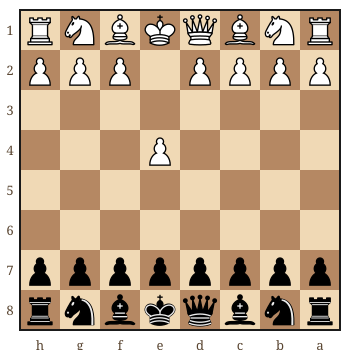
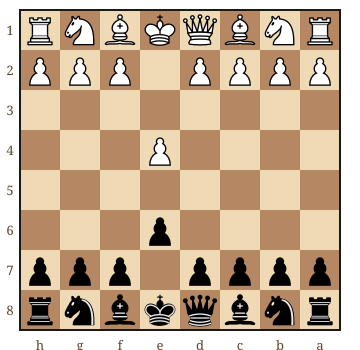
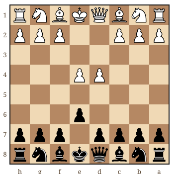
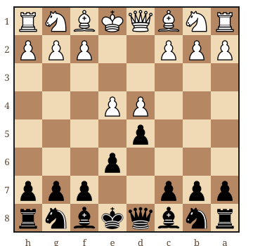
Ce que chaque coup accomplit
- 1. e4
Les Blancs installent leur pion en e4.
- 1…e6
Le pion e6 prépare …d5 et ouvre une diagonale au fou f8. Il restreint aussi celle du fou c8.
- 2. d4
Les Blancs occupent d4 : leur centre contient deux pions.
- 2…d5
Le pion d5 attaque e4 et est soutenu par e6. Le choix des Blancs va préciser la structure.
Votre fil conducteur
Trois idées à garder en tête
Repérer la chaîne de pions
Après e5, les pions blancs d4 et e5 se soutiennent en diagonale. Attaquer le pion d4 peut affaiblir ce soutien.
Préparer une rupture centrale
Le coup …c5 conteste d4. Il s’agit d’une poussée qui cherche à transformer la structure, pas d’une attaque directe contre le roi.
Trouver un rôle au fou c8
Le pion e6 ferme une de ses diagonales. Son développement ou un échange ultérieur demande un plan ; ne le laissez pas absent de toute votre réflexion.
Un exemple court pour comprendre le plan
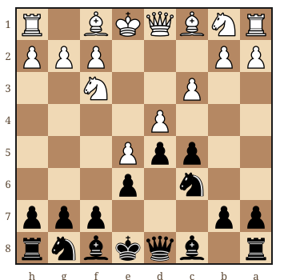
Les Blancs avancent e5 et soutiennent d4 avec c3. Les Noirs attaquent d4 par …c5 puis développent le cavalier en c6, qui ajoute une pression sur d4. L’exemple montre un combat de pions, sans aller plus loin dans la variante.
Deux choix des Blancs à reconnaître
3. e5 : La variante d’avance
Le pion blanc avance et le centre se ferme. Cherchez alors les points d’appui de la chaîne plutôt qu’une capture immédiate sur e4.
3. exd5 : La variante d’échange
L’échange enlève le contact initial entre e4 et d5. Après …exd5, le fou c8 dispose d’une diagonale libérée par le départ du pion e.
Ce sont des repères pour vous orienter. Vous n’avez pas besoin de mémoriser leurs ramifications pour commencer à jouer.
Comprendre ce qui se joue
Lire le centre et la structure de pions
Après e4, …e6, d4 et …d5, les Blancs disposent de plusieurs manières de traiter le contact central. Avec e5, ils construisent une chaîne où d4 soutient e5. Le pion e5 contrôle d6 et f6 : cela influence directement les cases des cavaliers noirs. Le centre fermé réduit certains échanges immédiats, mais ne supprime pas les attaques contre ses soutiens.
La poussée …c5 attaque d4, la base du duo de pions blancs. Si les Blancs soutiennent d4 par c3, ils utilisent un nouveau pion et occupent une case de développement du cavalier b1. Si des échanges ont ensuite lieu en d4, la structure change encore. Il faut donc suivre la chaîne au fil des coups, plutôt que réciter « attaquer la base » sans regarder quelle pièce ou quel pion la défend.
Le fou c8 est gêné par le pion e6 tant que ce pion reste sur sa diagonale. Dans une variante d’échange, exd5 suivi de …exd5 fait disparaître cet obstacle. Il serait alors faux de continuer à le traiter comme un fou enfermé. L’activité d’une pièce dépend de la structure présente, pas de la réputation de son ouverture.
Quelles cases chercher pour vos pièces ?
Ces placements sont des repères à vérifier dans la position, pas des coups à jouer sans regarder l’adversaire.
- Pion c7c5 pour contester d4 dans la structure d’avance
- Vérifiez les reprises après un échange et les pièces qui soutiennent la pression. La rupture sert à changer le centre.
- Cavalier b8c6 quand le pion c a quitté c7
- Le cavalier c6 attaque d4. Il complète ainsi le travail du pion c5.
- Cavalier g8une case compatible avec le pion blanc e5
- Dans la structure d’avance, e5 attaque f6. Des routes comme e7 sont à examiner selon les pièces déjà développées.
- Fou c8un projet dépendant du pion e6
- Après …exd5, sa diagonale peut redevenir disponible. Si e6 reste en place, il faudra chercher une autre manière de l’activer.
- Roi et fou f8développement puis sécurité du roi
- Le centre fermé ne garantit pas que le roi peut rester au milieu. Regardez les lignes qui peuvent s’ouvrir après les échanges.
Comment réagir aux idées adverses
Si les Blancs ferment par e5
Ils ont plus d’espace, mais leurs pions ont aussi des soutiens à défendre. …c5 conteste d4 et …Cc6 peut augmenter cette pression. Avant une capture, imaginez la reprise : remplacer un pion par un autre peut conserver la chaîne, mais modifier les colonnes et les diagonales.
Si les Blancs prennent en d5
La reprise …exd5 ouvre la diagonale du fou c8. Vous n’avez plus exactement le problème de la variante d’avance. Les développements peuvent être plus directs ; vérifiez les cases libres et les menaces au lieu de chercher une manœuvre prévue pour un centre fermé.
Si vous voulez jouer …f6 plus tard
L’idée peut être de contester le pion e5, mais elle touche les pions proches du roi et ouvre des lignes. Demandez-vous quelles pièces sont prêtes, où se trouve votre roi et comment les Blancs peuvent capturer. Une rupture thématique n’est pas automatiquement bonne dans toute position.
Une décision concrète
La Française où le fou c8 peut sortir normalement
Les Blancs ont choisi l’échange en d5. Le pion e6 a repris en d5, puis les Blancs ont développé Cf3. Regardez le trajet du fou c8 : l’obstacle e6 a disparu.
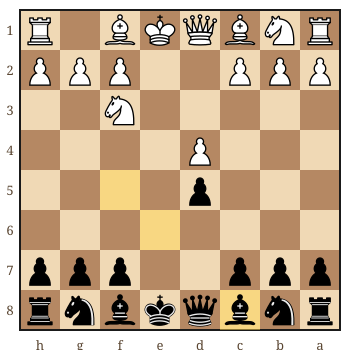
Quel développement permet au fou c8 de rejoindre f5 dans cette position ?
Repérez d’abord les menaces et les cases contrôlées, puis proposez une réponse.
Lire l’analyse de la position
4…Ff5 est légal : le fou passe par d7 puis e6, deux cases maintenant libres, pour arriver en f5. Ce coup illustre l’effet de l’échange sur la mobilité. Il ne faut pas importer automatiquement le problème du fou enfermé depuis une autre structure de Française.
Comparer pour comprendre
Un développement habituel peut perdre du matériel dans un centre fermé
« Sortir ses cavaliers vers le centre » est un bon principe général. Il ne remplace pas la vérification des cases attaquées par les pions. Dans la Française d’avance, le pion blanc e5 contrôle f6 : c’est un détail qui change le développement du cavalier g8.
L’atelier oppose une rupture centrale cohérente à un automatisme de développement qui coûte du matériel. La différence se calcule en quelques coups. Vous n’avez pas besoin d’apprendre une longue variante pour comprendre pourquoi un principe doit être appliqué à la position présente.
Position commune de départ :
1. e4 e6 2. d4 d5 3. e5
Rejouez cette position, puis comparez les suites ci-dessous. Ce sont des exemples commentés : elles ne constituent pas deux recommandations équivalentes ni des coups à reproduire sans calculer.
…c5 : attaquer un soutien de la chaîne
3… c5
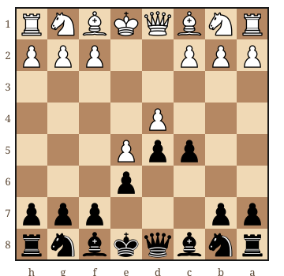
3…c5 conteste d4, qui soutient le pion e5. Le pion noir c5 attaque d4 en diagonale. Le centre n’est pas immédiatement gagné : les Blancs peuvent le soutenir ou choisir des échanges. Mais le coup a une cible claire et évite de poser une pièce sur une case déjà contrôlée par un pion.
Les Noirs devront développer leurs pièces pour accompagner cette pression. Un coup de pion qui attaque la base d’une chaîne ne suffit pas si les autres pièces restent sans rôle. …Cc6 peut, selon la suite, ajouter un attaquant sur d4.
…Cf6 ? puis exf6 : calculer le coût réel
3… Cf6 4. exf6 Dxf6
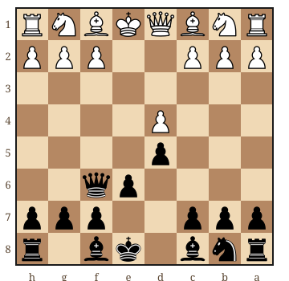
Dans l’illustration 3…Cf6 4. exf6 Dxf6, le pion blanc e5 capture le cavalier f6, puis la dame noire reprend ce pion. Les Noirs ont perdu un cavalier et les Blancs un pion. Avec les valeurs usuelles, cela représente deux points de matériel en faveur des Blancs.
La reprise de dame ne « répare » donc pas la perte du cavalier : elle récupère seulement le pion qui l’a capturé. Cet exemple sert à apprendre un compte complet de l’échange. Il ne prétend pas interdire toutes les manœuvres de cavalier en f6 dans toutes les Françaises ; il montre le danger dans cette position précise.
Vérifiez votre compréhension
Pourquoi le pion e5 peut-il prendre un cavalier en f6 ?
Un pion blanc capture une case en diagonale vers l’avant. Depuis e5, il contrôle d6 et f6.
Après …Cf6, exf6 et …Dxf6, qui a gagné du matériel ?
Les Blancs ont gagné un cavalier et perdu un pion. Le bilan usuel est un avantage matériel de deux points ; une reprise n’efface pas les captures précédentes.
Le coup …c5 attaque-t-il le pion e5 directement ?
Non. Le pion c5 attaque d4, qui soutient e5. C’est une pression sur la base de la chaîne.
À appliquer dans vos parties : Avant un coup de développement, vérifiez les attaques de pions sur la case d’arrivée. Après un échange, faites le bilan de toutes les pièces retirées, pas uniquement de la dernière reprise. Ces deux habitudes évitent beaucoup de pertes dans les centres fermés.
Reconnaître les embranchements
Deux variantes à comprendre pour commencer
Ces lignes courtes montrent ce qui change dans le centre et le développement. Rejouez les coups, puis formulez le plan avec vos propres mots ; les réponses adverses peuvent vous amener à une autre position.
L’avance : attaquer la base d4
1. e4 e6 2. d4 d5 3. e5 c5 4. c3 Cc6
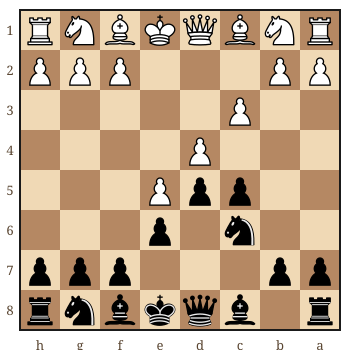
Les Blancs installent une chaîne d4–e5, puis c3 soutient d4. Les Noirs attaquent sa base avec …c5 et développent le cavalier en c6 pour augmenter la pression. Le centre fermé n’est donc pas un centre tranquille.
Le plan à comprendre : Comptez les attaquants et les défenseurs de d4 avant d’échanger en c5. Si la base disparaît, e5 peut devenir plus difficile à soutenir. Les Noirs doivent coordonner cette pression avec leur développement, plutôt que multiplier les coups de dame.
La variante d’échange : une diagonale libérée
1. e4 e6 2. d4 d5 3. exd5 exd5 4. Cf3 Cf6 5. Fd3
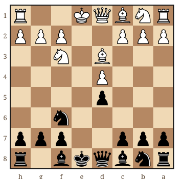
Les pions e ont quitté leur colonne en s’échangeant : le pion noir venu de e6 se trouve maintenant en d5. Le fou c8 n’est plus bloqué par e6. Les deux camps peuvent développer leurs pièces autour d’une structure plus symétrique.
Le plan à comprendre : Les Noirs peuvent préparer leur fou et leur roque. Ne transportez pas automatiquement le diagnostic du « mauvais fou français » dans cette position : les échanges ont changé son accès au jeu. L’activité des pièces doit être évaluée sur l’échiquier actuel.
Calculer avant de jouer
Piège et vigilance : Une dame attaquée par un cavalier qui ne peut pas bouger
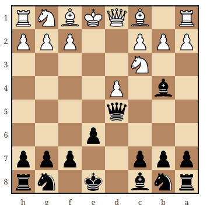
1. e4 e6 2. d4 d5 3. Cc3 Fb4 4. exd5 Dxd5
Avant de lire la suite, repérez les échecs, les captures et les pièces attaquées.
Voir la suite et le mécanisme
5. Fd2
La dame noire vient en d5, sur une case normalement attaquée par le cavalier c3. Pourtant Cxd5 est illégal : quitter c3 ouvrirait la diagonale du fou b4 vers le roi e1. Ce clouage est absolu, car il concerne le roi. Il faut le distinguer d’un clouage devant la dame, qui n’interdit pas légalement le mouvement.
Comment éviter le problème ou y répondre
Dans la position montrée, 5. Fd2 développe le fou c1 et interpose une autre pièce sur la diagonale vers le roi. Le cavalier c3 n’est alors plus cloué au roi et la menace de prendre en d5 devient réelle au coup suivant. Les Noirs doivent en tenir compte : la reprise de dame exploite un détail temporaire, pas une protection permanente.
Suite de référence à rejouer depuis le début :
1. e4 e6 2. d4 d5 3. Cc3 Fb4 4. exd5 Dxd5 5. Fd2
Passer de l’ouverture au milieu de partie
Quand les pièces sortent, vos décisions doivent dépendre de la structure réellement obtenue. Dans un centre fermé, cherchez les ruptures qui ouvriront des lignes au bon moment. Dans une structure d’échange, regardez davantage l’activité immédiate des pièces et les colonnes qui peuvent servir aux tours.
Après une partie, choisissez un échange central et comparez les diagonales avant et après. Si vous n’avez pas changé votre plan malgré un changement important de pions, vous avez trouvé une raison concrète de revoir cette position.
Le nom et ses origines
D’où vient le nom « défense française » ?
Le nom « française » est lié à une partie par correspondance entre les clubs de Londres et de Paris en 1834. Les joueurs parisiens y emploient cette réponse à e4, contribuant à sa dénomination.
Cet épisode explique le nom, pas une invention certaine en 1834. Les ouvertures se construisent à travers des parties et des analyses successives ; une référence nationale ne donne pas un créateur unique.
La dénomination historique ne change pas la décision centrale : après …d5, les Blancs peuvent fermer, échanger ou défendre le pion e4. Source
Les erreurs à éviter dans cette ouverture
Confondre centre fermé et sécurité totale
Des attaques restent possibles. Avant un coup de pion, vérifiez les pièces et la sécurité du roi.
Attaquer uniquement le pion e5
Le soutien d4 compte aussi. Comprendre la base d’une chaîne aide à choisir une rupture comme …c5.
Ignorer le fou c8
Une pièce gênée par ses pions peut rester longtemps inactive. Le plan doit inclure son avenir, même si elle ne sort pas immédiatement.
À vous de jouer
Un exercice pour vérifier l’idée
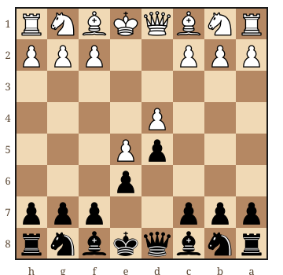
Quel coup de pion attaque directement le soutien blanc d4 ?
Prenez quelques secondes pour choisir et expliquer votre coup.
Voir la réponse expliquée
3…c5 : le pion c7 avance de deux cases et attaque d4. Le coup met la chaîne blanche sous pression à sa base. Les Blancs peuvent la soutenir, par exemple avec c3 : la tension ne se résout donc pas automatiquement.
Votre prochaine séance de pratique
- Après e5, nommez le pion qui soutient ce pion avancé.
- Comparez la diagonale du fou c8 après l’avance et après l’échange en d5.
- Rejouez …c5 et expliquez pourquoi d4 devient une cible.
Besoin de comprendre vos propres parties ? Les cours d’échecs permettent de travailler à partir de vos positions.
Quelles ouvertures comparer ensuite ?
- Défense Caro-Kann : comprendre c6 et d5 pour débuter
Comparer les structures et la sortie du fou c8.
- Défense sicilienne : comprendre 1…c5 pour débuter
Étudier une autre réponse noire à e4 et ses ruptures centrales.
Retrouver les onze ouvertures et choisir votre prochaine fiche.
Questions fréquentes
Quels sont les premiers coups de la Française ?
La défense est définie par 1. e4 e6. La suite 2. d4 d5 illustre sa lutte centrale : le pion e6 soutient d5, qui attaque e4.
Pourquoi s’appelle-t-elle française ?
Le nom renvoie à une partie par correspondance Londres–Paris de 1834 où les joueurs parisiens utilisent cette défense. Il ne faut pas confondre cet épisode avec une création certaine de tous ses coups.
Pourquoi le fou c8 pose-t-il une question ?
Le pion e6 restreint sa diagonale. Les Noirs doivent lui trouver un développement ou un rôle dans la suite de la partie.
Sources et vérification
Les références ci-dessous documentent l’histoire et la nomenclature. Les explications pédagogiques et l’exercice sont adaptés aux débutants ; les positions et les suites commentées ont été vérifiées par rejeu des coups.
- Défense française — histoire et origine du nom — consulté le 24 novembre 2026
- Lichess — nomenclature et suites des ouvertures — consulté le 24 novembre 2026